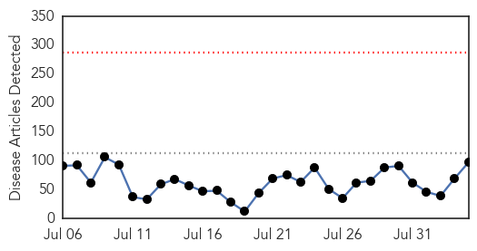

Mumps
30-Day Web Trend
7 alerts, 0 warnings

30-Day Twitter Trend
0 alerts, 0 warnings

Article Locations
Article Confidences

Top Articles:
- 0.985
- Seven dead in Legionnaires' outbreak in New York
- 0.977
- Updated: UI asks students to get mumps vaccine before semester
- 0.970
- U of Illinois mumps outbreak grows; vaccinations urged
- 0.962
- U of Illinois mumps outbreak grows; vaccinations urged
- 0.813
- University of Illinois calls on students to get MMR booster
- 0.625
- Mumps outbreak reported at U of I Champaign-Urbana
Top Tweets:
-
No tweets found for Aug 04, 2015
Unknown
30-Day Web Trend
0 alerts, 0 warnings

30-Day Twitter Trend
0 alerts, 0 warnings

Article Locations


Article Confidences

Top Articles:
- 0.997
- (LEAD) S. Korea reports no additional MERS cases for 30th consecutive day
- 0.995
- 3 More People Die, 10 More Sick in Bronx Legionnaires’ Outbreak, as Residents Pack Town Hall Meeting
- 0.991
- NYC outbreak of Legionnaires’ disease kills seven
- 0.990
- Seven dead in Bronx in Legionnaires' Disease outbreak
- 0.989
- South Korea president replaces health minister after Mers outbreak, Government & Economy
- 0.988
- Legionnaires' disease in New York: what is it and how does it spread?
- 0.988
- South Korea's president replaces health minister, widely blamed for mishandling Mers outbreak, East Asia News & Top Stories
- 0.987
- South Korea President replaces health minister after MERS outbreak
- 0.987
- South Korea’s president dumps health minister after poor response to Mers outbreak
- 0.987
- The Doctor Is In: Legionnaires' outbreak must be contained
- 0.985
- S. Korea president swaps health minister after MERS outbreak
- 0.981
- S. Korean minister sacked over Mers crisis, Asia News & Top Stories
- 0.980
- Death toll in South Bronx Legionnaires' disease outbreak rises to 7, officials say
- 0.980
- Death toll rises in outbreak of Legionnaires' disease in NYC
- 0.978
- Seven dead, 86 infected as New York officials identify and disinfect cooling towers filled with Legionnaires bacteria
- 0.975
- Patients from UAE return to South Korea as Mers scare subsides
- 0.974
- The Portland Press Herald / Maine Sunday Telegram
- 0.966
- Legionnaires outbreak kills seven in New York
- 0.965
- City vows action to prevent Legionnaires' outbreaks
- 0.958
- Legionnaire's Disease: NYC Outbreak Leaves 7 Dead, Michigan Woman Also Dead
- 0.955
- NYC targets cooling systems linked to Legionnaires' outbreak
- 0.949
- Death toll from Legionnaires’ disease outbreak in NYC rises to 7
- 0.946
- Legionnaire’s Disease Death Toll Rises to 7 in New York
- 0.943
- USA needs to take immediate steps to fight super bugs, experts say
- 0.939
- 7 people with Legionnaires’ disease have died in NY outbreak
- 0.934
- 7 Total Dead From Legionnaires' As Officials Announce 3 More Deaths
- 0.933
- Number of Legionnaires' Cases Rises to 86 Amid Deadly Outbreak
- 0.929
- Death toll from legionnaires' disease outbreak in New York climbs to seven
- 0.925
- Legionnaires’ disease outbreak claims fourth victim in New York
- 0.924
- What you need to know about the Legionnaire's disease outbreak in NYC
- 0.917
- Chicago Tribune
- 0.917
- Chicago Tribune
- 0.917
- Chicago Tribune
- 0.917
- Chicago Tribune
- 0.914
- New York legionnaires' disease outbreak leaves seven dead, officials say
- 0.898
- CDC: Coordinated approach could cut projected ‘superbug’ infections in half
- 0.889
- South Bronx Legionnaires' disease death toll rises to seven
- 0.884
- NYC health official expects more Legionnaires’ disease cases
- 0.870
- Two-dose chickenpox vaccination program reduces US outbreaks by 78%
- 0.865
- Better Control of Drug-Resistant Germs Could Save Thousands of Lives: CDC
- 0.859
- The Chosun Ilbo (English Edition): Daily News from Korea
- 0.856
- whole pig
- 0.853
- 86 cases of deadly Legionnaires’ disease confirmed in South Bronx
- 0.846
- S. Korean health minister replaced by doctor after MERS
- 0.818
- De Blasio Pushes Legislation to Combat Legionnaires' Disease Outbreak
- 0.813
- Virus-like nanoparticle vaccine effective against RSV
- 0.804
- Four dead from Legionnaires' disease in NY
- 0.804
- Park nominates medical professor as new health minister
- 0.798
- Turbidity Alerts Las Vegas Area To Water-Borne Diseases
- 0.798
- Belarus suspends pork imports from Russia's Vladimir Oblast
Showing top 50 articles...
Top Tweets:
-
No tweets found for Aug 04, 2015